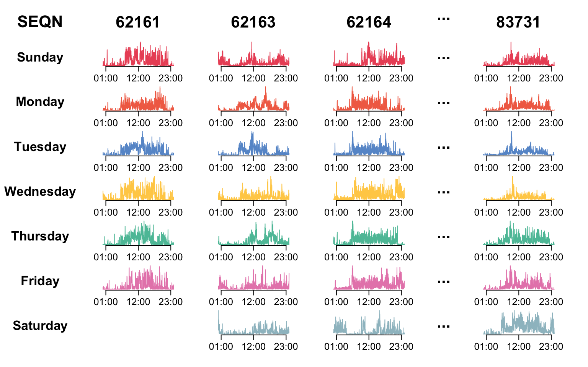
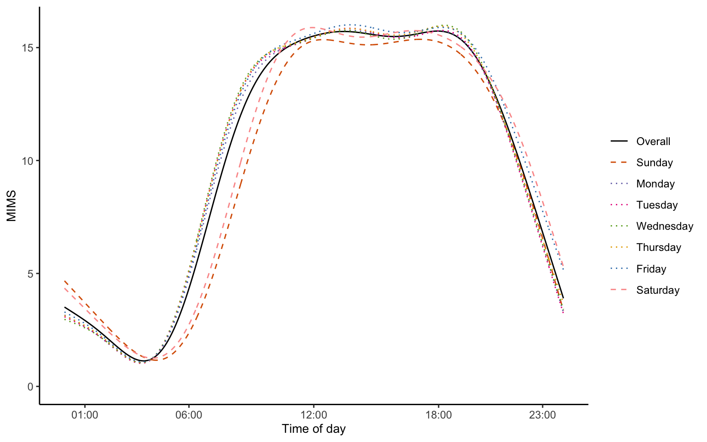
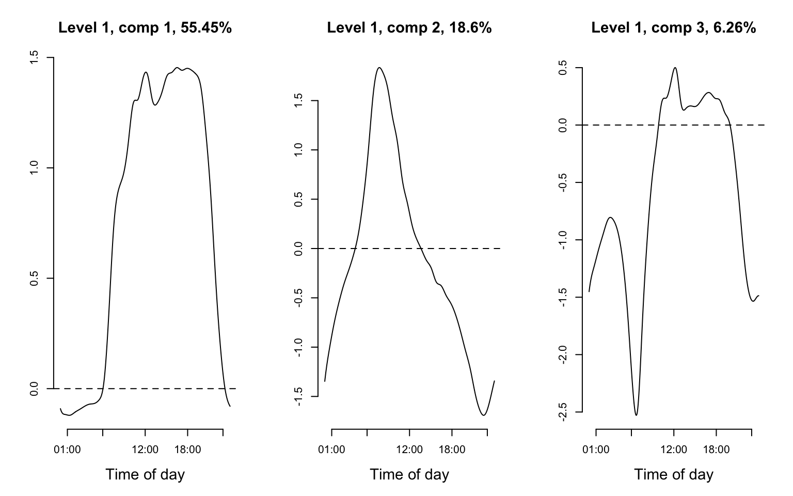
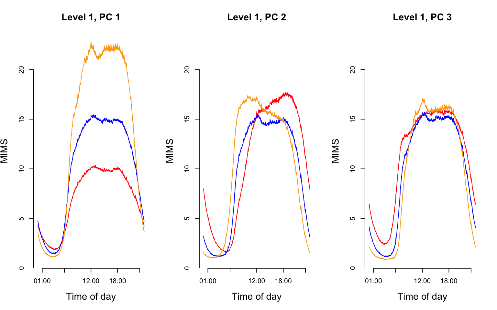
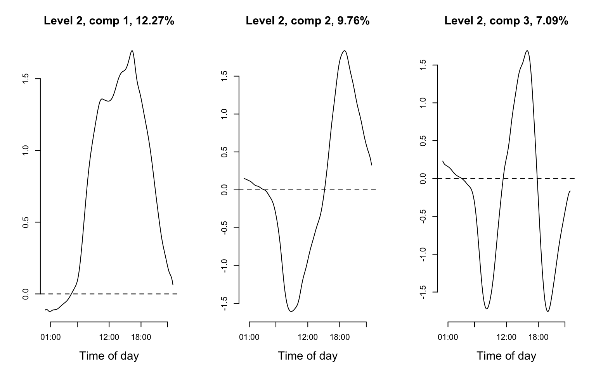
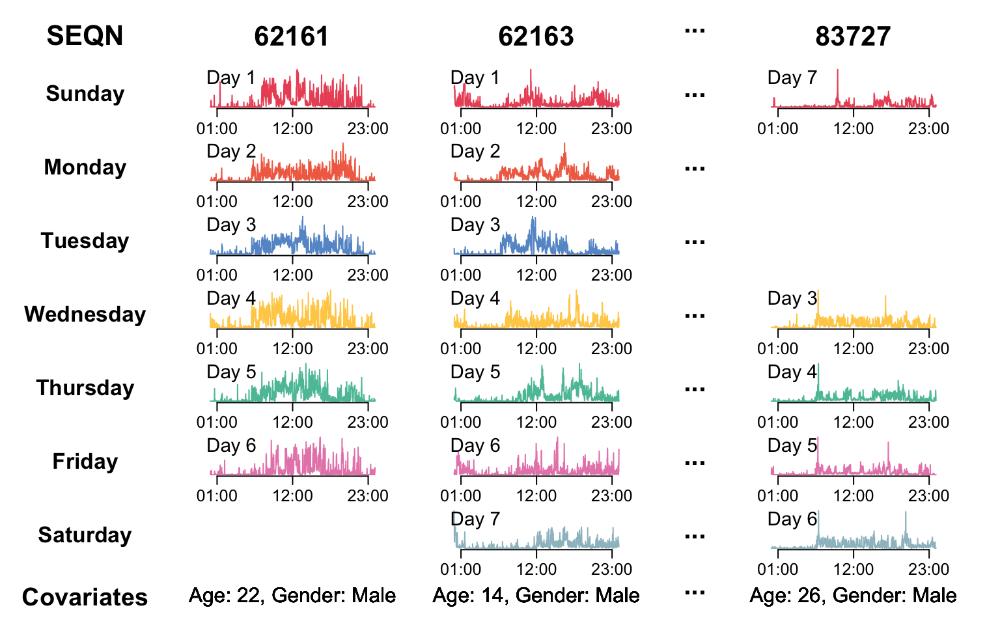
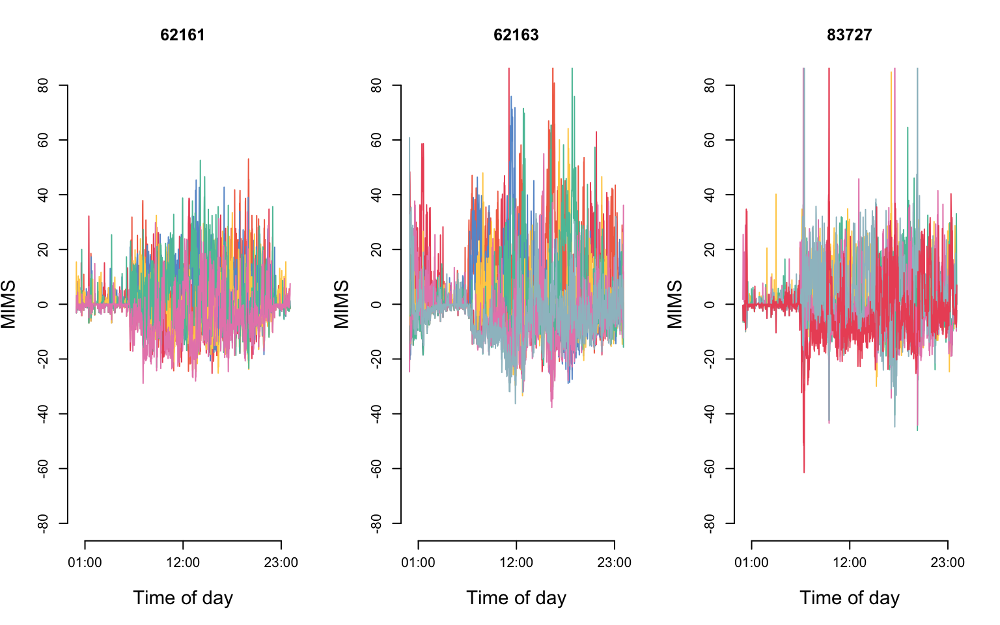

We now describe the physical activity data in NHANES, which has a multilevel functional structure. A wrist-worn device was deployed in NHANES 2011-2014, and each participant was asked to wear it for seven consecutive days. The accelerometry data were collected from the device and released in minute-level MIMS, a measure of physical activity intensity.
The code below display the physical activity data structure in NHANES and reproduce Figure 8.1 of the book.
library(tidyverse)
library(ggplot2)
library(gridExtra)
library(ggpubr)
#load NHANES data
data <- readRDS("./data/nhanes_fda_with_r_ml.rds")
dow <- c("Sunday","Monday","Tuesday","Wednesday","Thursday","Friday","Saturday")
unit <- "MIMS"
#set color palette to plot
col_pal <- c("#EC5565", "#F26E53", "#6798D0", "#FFCE55", "#5BC1A6", "#E788B8", "#9EBFC9")
#Select individuals to plot their PA
id <- c(62161, 62163, 62164, 83731)
#Set the layout
layout(matrix(c(1:(9*(length(id)+3))), 9, length(id)+3, byrow = FALSE),
heights = c(0.7,1,1,1,1,1,1,1,0.5), widths = c(0.7,rep(1,length(id)-1),0.3,1,0.1))
#SEQN
par(mar = c(0,0,0,0))
plot(c(0, 1), c(0, 1), ann = F, bty = 'n', type = 'n', xaxt = 'n', yaxt = 'n')
text(x = 0.5, y = 0.3, "SEQN", cex = 2, col = "black", font = 2)
#Day of week
for(j in dow){
par(mar = c(0,0,0,0))
plot(c(0, 1), c(0, 1), ann = F, bty = 'n', type = 'n', xaxt = 'n', yaxt = 'n')
text(x = 0.5, y = 0.4, as.expression(bquote(bold(.(j)))), cex = 1.6, col = "black", font = 1.5)
}
#Add space on the bottom
par(mar = c(0,0,0,0))
plot(c(0, 1), c(0, 1), ann = F, bty = 'n', type = 'n', xaxt = 'n', yaxt = 'n')
for(i in 1:(length(id))){
if(i == length(id)){
#Add space on the middle column with ellipsis
for(k in 1:8){
par(mar = c(0,0,0,0))
plot(c(0, 1), c(0, 1), ann = F, bty = 'n', type = 'n', xaxt = 'n', yaxt = 'n')
text(x = 0.5, y = 0.4, "...", cex = 2, col = "black", font = 2)
}
par(mar = c(0,0,0,0))
plot(c(0, 1), c(0, 1), ann = F, bty = 'n', type = 'n', xaxt = 'n', yaxt = 'n')
}
par(mar = c(0,0,0,0))
plot(c(0, 1), c(0, 1), ann = F, bty = 'n', type = 'n', xaxt = 'n', yaxt = 'n')
text(x = 0.5, y = 0.3, id[i], cex = 2, col = "black", font = 2)
id_ind <- which(data$SEQN == id[i])
#Extract subject level data and organize them into long format
df_wide <- data.frame(unclass(data[id_ind,unit]), dow = dow[as.numeric(data$dayofweek[id_ind])])
colnames(df_wide)[1:1440] <- 1:1440
df_long <- pivot_longer(df_wide, cols = 1:1440, names_to = "minute", values_to = "value")
df_long$minute <- as.numeric(df_long$minute)
df_long$dow <- factor(df_long$dow, levels = dow)
df_long$id <- id[i]
#Plot data at each dow
for(j in dow){
df_plt <- df_long %>% filter(dow == j)
par(mar = c(1,2,1,2))
if(nrow(df_plt) != 0){ ## if the subject has data on this day of week
plot(df_plt$minute, df_plt$value, type = "l", xaxt = 'n', xlab = "",
bty = "n", yaxt = "n", col = col_pal[which(dow == j)])
axis(side = 1, at = c(12, 144, 276)*5, labels = c("01:00", "12:00", "23:00"),
padj = -0.4, cex.axis = 1.2)
}else{
plot(c(0, 1), c(0, 1), ann = F, bty = 'n', type = 'n', xaxt = 'n', yaxt = 'n')
}
}
#Add space on the bottom
par(mar = c(0,0,0,0))
plot(c(0, 1), c(0, 1), ann = F, bty = 'n', type = 'n', xaxt = 'n', yaxt = 'n')
}
We now show how to implement Multilevel Functional Principal
Component Analysis (MFPCA) for the NHANES data set in R. The code below
shows how to implement MFPCA on this NHANES data set to decompose the
within-subject and between-subject variability of physical activity
using the mfpca.face() function from the
refund package.
library(refund)
library(tidyverse)
nhanes_ml_df <- readRDS("./data/nhanes_fda_with_r_ml.rds")
fit_mfpca <- mfpca.face(Y = nhanes_ml_df$MIMS,
id = nhanes_ml_df$SEQN,
visit = nhanes_ml_df$dayofweek)
#Build the fixed dataset
dat_fixed <- as.data.frame(fit_mfpca$eta + fit_mfpca$mu)
colnames(dat_fixed) <- c("Sunday", "Monday", "Tuesday", "Wednesday", "Thursday", "Friday", "Saturday")
dat_fixed$Overall <- fit_mfpca$mu
dat_fixed$time <- 1:1440
dat_fixed_long <- pivot_longer(dat_fixed, cols = 1:8, names_to = "Day")
dat_fixed_long$Day <- factor(dat_fixed_long$Day, levels = c("Overall", "Sunday", "Monday",
"Tuesday", "Wednesday", "Thursday", "Friday", "Saturday"))After performing MFPCA, we plot the fixed effect functions and reproduce Figure 8.3 of the book.
#Plot mu and eta
ggplot(dat_fixed_long, aes(x = time, y = value, group = Day)) +
theme_classic() +
geom_line(aes(linetype = Day, color = Day)) +
scale_linetype_manual(values = c("solid", "dashed", rep("dotted",5), "dashed")) +
scale_color_manual(values=c("black",c("#D95F02", "#7570B3", "#E7298A",
"#66A61E", "#E6AB02", "#377EB8", "#FB9A99"))) +
scale_x_continuous(breaks = c(1,6,12,18,23)*60,
labels = c("01:00","06:00","12:00","18:00","23:00")) +
ylim(0, NA) +
labs(x = "Time of day", y = "MIMS", color = "", linetype = "") +
theme(legend.position="right",
axis.title = element_text(size = 10))
Next, we plot the first three eigenfunctions of level 1 and reproduce Figure 8.4 of the book.
par(mfrow = c(1, 3))
for(i in 1:3){
plot(fit_mfpca$efunctions$level1[,i], type = "l", xlab = "Time of day", xaxt = "n", ylab = "", cex.lab=1.4, cex.main = 1.4,
main = paste0("Level 1, comp ", i, ", ", round(fit_mfpca$evalues$level1[i]/sum(fit_mfpca$evalues$level1)*100, 2), "%"), bty = "n")
axis(1, at=(c(1,6,12,18,23)*60), labels=c("01:00","06:00","12:00","18:00","23:00"))
abline(h = 0, lty = 2)
}
To further illustrate these estimated principal components in our data, We show the average physical activity curves by tertile of the scores of each principal component using the code below, which reproduces Figure 8.5 of the book.
#plot the curves by tertile
SEQN_id <- unique(nhanes_ml_df$SEQN)
mean_curve_l1 <- tertile <- list()
mean_curve_l1[['PC1']] <- mean_curve_l1[['PC2']] <-
mean_curve_l1[['PC3']] <- matrix(NA, 3, ncol(nhanes_ml_df$MIMS))
tertile[['PC1']] <- ntile(fit_mfpca$scores$level1[,1], 3)
tertile[['PC2']] <- ntile(fit_mfpca$scores$level1[,2], 3)
tertile[['PC3']] <- ntile(fit_mfpca$scores$level1[,3], 3)
for(i in 1:3){
mean_curve_l1$PC1[i,] <- apply(nhanes_ml_df$MIMS[which(nhanes_ml_df$SEQN %in%
SEQN_id[which(tertile$PC1 == i)]),],
2, mean, na.rm = TRUE)
mean_curve_l1$PC2[i,] <- apply(nhanes_ml_df$MIMS[which(nhanes_ml_df$SEQN %in%
SEQN_id[which(tertile$PC2 == i)]),],
2, mean, na.rm = TRUE)
mean_curve_l1$PC3[i,] <- apply(nhanes_ml_df$MIMS[which(nhanes_ml_df$SEQN %in%
SEQN_id[which(tertile$PC3 == i)]),],
2, mean, na.rm = TRUE)
}
par(mfrow = c(1, 3))
for(i in 1:3){
plot(1:1440, mean_curve_l1[[paste0('PC',i)]][1,], type = "l",
xlab = "Time of day", ylab = "MIMS", xaxt = "n",
main = paste0("Level 1, PC ", i), col = "red",
ylim = range(mean_curve_l1), cex.lab=1.4, cex.main = 1.4, bty = "n")
axis(1, at=(c(1,6,12,18,23)*60), labels=c("01:00","06:00","12:00","18:00","23:00"))
lines(1:1440, mean_curve_l1[[paste0('PC',i)]][2,], col = "blue")
lines(1:1440, mean_curve_l1[[paste0('PC',i)]][3,], col = "orange")
}
Finally, we plot the first three eigenfunctions of level 2 and reproduce Figure 8.6 of the book.
par(mfrow = c(1, 3))
for(i in 1:3){
plot(fit_mfpca$efunctions$level2[,i], type = "l", xlab = "Time of day", xaxt = "n", ylab = "", cex.lab=1.4, cex.main = 1.4,
main = paste0("Level 2, comp ", i, ", ", round(fit_mfpca$evalues$level2[i]/sum(fit_mfpca$evalues$level2)*100, 2), "%"), bty = "n")
axis(1, at=(c(1,6,12,18,23)*60), labels=c("01:00","06:00","12:00","18:00","23:00"))
abline(h = 0, lty = 2)
}
Functional mixed models (FMM) are extension of mixed effects models to functional data. They provide a useful framework that allows the explicit separation of different sources of observed variability. We now show NHANES data with a multilevel functional mixed effects model (FMM) struc- ture.
nhanes_ml_df <- readRDS("./data/nhanes_fda_with_r_ml.rds")
#Select id to plot
id <- c(62161, 62163, 83727)
#Set the layout
layout(matrix(c(1:(10*(length(id)+3))), 10, length(id)+3, byrow = FALSE),
heights = c(0.7,1,1,1,1,1,1,1,0.6,0.2), widths = c(0.7,rep(1,length(id)-1),0.3,1,0.1))
#SEQN
par(mar = c(0,0,0,0))
plot(c(0, 1), c(0, 1), ann = F, bty = 'n', type = 'n', xaxt = 'n', yaxt = 'n')
text(x = 0.5, y = 0.3, "SEQN", cex = 2, col = "black", font = 2)
#Day of week
for(j in dow){
par(mar = c(0,0,0,0))
plot(c(0, 1), c(0, 1), ann = F, bty = 'n', type = 'n', xaxt = 'n', yaxt = 'n')
text(x = 0.5, y = 0.4, as.expression(bquote(bold(.(j)))), cex = 1.6, col = "black", font = 1)
}
#Covariates
par(mar = c(0,0,0,0))
plot(c(0, 1), c(0, 1), ann = F, bty = 'n', type = 'n', xaxt = 'n', yaxt = 'n')
text(x = 0.5, y = 0.3, "Covariates", cex = 1.8, col = "black", font = 2)
#Add space on the bottom
par(mar = c(0,0,0,0))
plot(c(0, 1), c(0, 1), ann = F, bty = 'n', type = 'n', xaxt = 'n', yaxt = 'n')
for(i in 1:(length(id))){
if(i == length(id)){
#Add space on the middle column with ellipsis
for(k in 1:9){
par(mar = c(0,0,0,0))
plot(c(0, 1), c(0, 1), ann = F, bty = 'n', type = 'n', xaxt = 'n', yaxt = 'n')
text(x = 0.5, y = 0.4, "...", cex = 2, col = "black", font = 2)
}
par(mar = c(0,0,0,0))
plot(c(0, 1), c(0, 1), ann = F, bty = 'n', type = 'n', xaxt = 'n', yaxt = 'n')
}
par(mar = c(0,0,0,0))
plot(c(0, 1), c(0, 1), ann = F, bty = 'n', type = 'n', xaxt = 'n', yaxt = 'n')
text(x = 0.5, y = 0.3, id[i], cex = 2, col = "black", font = 2)
id_ind <- which(nhanes_ml_df$SEQN == id[i])
#Extract subject level data and organize them into long format
df_wide <- data.frame(unclass(nhanes_ml_df[id_ind,unit]), dow = dow[as.numeric(nhanes_ml_df$dayofweek[id_ind])])
colnames(df_wide)[1:1440] <- 1:1440
df_long <- pivot_longer(df_wide, cols = 1:1440, names_to = "minute", values_to = "value")
df_long$minute <- as.numeric(df_long$minute)
df_long$dow <- factor(df_long$dow, levels = dow)
df_long$id <- id[i]
#Day of wear vector
dowe <- as.numeric(nhanes_ml_df$dayofwear[which(nhanes_ml_df$SEQN == id[i])])
#Plot data at each dow
for(j in dow){
df_plt <- df_long %>% filter(dow == j)
par(mar = c(1,2,1,2))
if(nrow(df_plt) != 0){ ## if the subject has data on this day of week
plot(df_plt$minute, df_plt$value, type = "l", xaxt = 'n', xlab = "",
bty = "n", yaxt = "n", lwd = 1, col = col_pal[which(dow == j)])
axis(side = 1, at = c(12, 144, 276)*5, labels = c("01:00", "12:00", "23:00"),
padj = -0.4, cex.axis = 1.2)
text(x = 0.13*max(df_plt$minute), y = 0.75*max(df_plt$value), paste0("Day ", dowe[which(nhanes_ml_df$dayofweek[which(nhanes_ml_df$SEQN == id[i])] == which(dow == j))]),
cex = 1.4, col = "black")
}else{
plot(c(0, 1), c(0, 1), ann = F, bty = 'n', type = 'n', xaxt = 'n', yaxt = 'n')
}
}
#Add covariate information
demo_ind <- nhanes_ml_df[which(nhanes_ml_df$SEQN == id[i]),]
par(mar = c(0,0,0,0))
plot(c(0, 1), c(0, 1), ann = F, bty = 'n', type = 'n', xaxt = 'n', yaxt = 'n')
text(x = 0.5, y = 0.3, paste0("Age: ", demo_ind$age, ", Gender: ", demo_ind$gender),
cex = 1.5)
#Add space on the bottom
par(mar = c(0,0,0,0))
plot(c(0, 1), c(0, 1), ann = F, bty = 'n', type = 'n', xaxt = 'n', yaxt = 'n')
}
In FMM, the structure of the residuals should be informed by and checked on the data. For example, if data can be assumed to be independent after accounting for the subject-specific mean, \(\epsilon_{im}(s)\) can be assumed to be independent. However, in many studies that contain different levels of functional variability, this assumption is too stringent. Here we display de-meaned visit-specific functions for three NHANES study participants.
par(mfrow = c(1, 3))
for(i in 1:length(id)){
id_ind <- which(nhanes_ml_df$SEQN == id[i])
df_MIMS <- data.frame(unclass(nhanes_ml_df[id_ind,unit]))
dow_ind <- dow[as.numeric(nhanes_ml_df$dayofweek[id_ind])]
df_residual <- t(t(df_MIMS) - colMeans(df_MIMS))
plot(df_residual[1,], type = "l", col = col_pal[which(dow == dow_ind[1])],
xaxt = 'n', xlab = "Time of day", ylab = "MIMS", ylim = c(-80, 80),
bty = "n", yaxt = "n", lwd = 1, main = id[i], cex.lab = 1.4 )
axis(side = 1, at = c(12, 144, 276)*5, labels = c("01:00", "12:00", "23:00"),
padj = -0.4, cex.axis = 1)
axis(side = 2, at = c(-80, -60, -40, -20, 0, 20, 40, 60, 80))
for(j in 2:nrow(df_residual)){
lines(df_residual[j,], type = "l", col = col_pal[which(dow == dow_ind[j])])
}
}
Consider the NHANES data introduced in Section 8.1. We are interested in the effect of age, gender, day of week, and day of wear on physical activity. For simplicity, here we focus on study participants who were between 18 and 30 years old at the time of wearing the device. Since FAMM could not run on the entire data set, here we only provide the syntax under NHANES application settings.
nhanes_ml_df_fmm <- nhanes_ml_df %>%
filter(age > 18 & age < 30)
#FAMM
fit_pffr <- pffr(MIMS ~ age + gender + dayofwear + dayofweek + s(SEQN, bs = "re"),
data = nhanes_ml_df_fmm,
algorithm = "bam",
method = "fREML",
discrete = TRUE,
bs.yindex = list(bs = "ps", k = 10, m = c(2, 1)),
bs.int = list(bs = "ps", k = 30, m = c(2, 1)))Similarly, we provide the syntax to fit FMM using FUI for the NHANES data set.
library(fastFMM)
#FUI
fit_fui <- fui(formula = MIMS ~ age + gender + dayofwear + dayofweek + (1 | SEQN),
data = nhanes_ml_df_fmm, family = "gaussian", var = TRUE)After fitting the model, Figure 8.9 of the book was created using the
fastFMM::plot_fui() function.